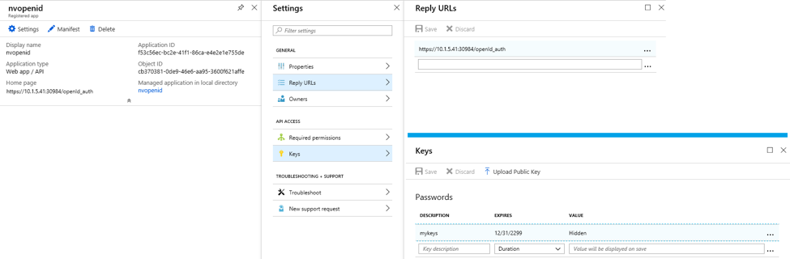
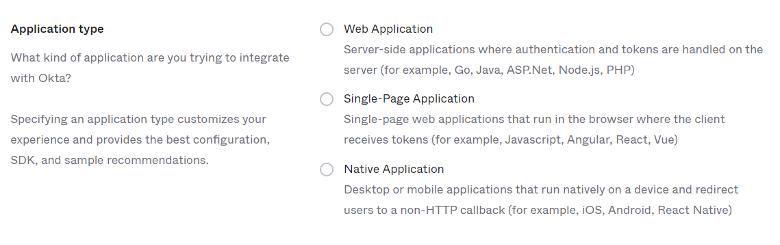
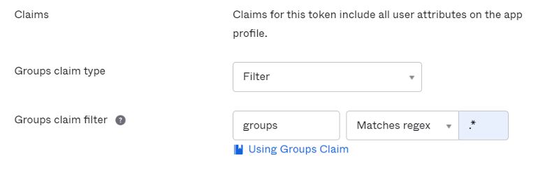

OpenID Connect Azure/Okta
Integration mit OpenID Connect (OIDC) für Azure und Okta
Um die OpenID Connect-Authentifizierung zu aktivieren, sind die Einstellungen Issuer, Client ID und Client-Geheimnis erforderlich. Mit der Issuer-URL wird SUSE® Security die Discovery-API aufrufen, um die Endpunkte für Authentifizierung, Token und Benutzerinformationen abzurufen.
Finden Sie die OpenID Connect Redirect-URI oben auf der SUSE® Security OpenID Connect-Konfigurationsseite. Sie müssen diese URI in die Login redirect URIs für Okta und Reply URLs für Microsoft Azure kopieren.

Microsoft Azure-Konfiguration
In Azure Active Directory > App-Registrierungen > Anwendungsname > Einstellungsseite, finden Sie die Anwendungs-ID-Zeichenfolge. Diese wird verwendet, um die Client-ID in SUSE® Security festzulegen. Das Client-Geheimnis kann in den Schlüsseln von Azure gefunden werden.

Die Issuer-URL hat das Format \https://login.microsoftonline.com/{tenantID}/v2.0. Um die tenantID zu finden, gehen Sie zu menu:Azure Active Directory[Eigenschaften-Seite] und finden Sie die Verzeichnis-ID, ersetzen Sie sie durch die tenantID in der URL.

Wenn die Benutzer den Gruppen im Active Directory zugewiesen sind, kann ihre Gruppenmitgliedschaft in den Anspruch aufgenommen werden. Finden Sie die Anwendung in Azure Active Directory → App-Registrierungen und bearbeiten Sie das Manifest. Ändern Sie den Wert von "groupMembershipClaims" in "Anwendungsgruppe". Es gibt eine maximale Anzahl von Gruppen, die in ein Token ausgegeben werden. Wenn der Benutzer zu einer großen Anzahl von Gruppen (> 200) gehört und der Wert "All" verwendet wird, wird das Token die Gruppen nicht enthalten und die Autorisierung schlägt fehl. Die Verwendung des Wertes "Anwendungsgruppe" anstelle von "Alle" reduziert die Anzahl der anwendbaren Gruppen, die im Token zurückgegeben werden.
Standardmäßig sucht SUSE® Security nach "Gruppen" im Anspruch, um die Gruppenmitgliedschaft des Benutzers zu identifizieren. Wenn ein anderer Anspruchsname verwendet wird, können Sie den Anspruchsnamen auf der SUSE® Security OpenID Connect-Konfigurationsseite anpassen.
Der von Azure zurückgegebene Gruppenanspruch wird durch die "Objekt-ID" anstelle des Namens identifiziert. Die Objekt-ID der Gruppe kann in menu:Azure Active Directory[Gruppen> Gruppenname-Seite] gefunden werden. Sie sollten diesen Wert verwenden, um die gruppenbasierte Rollenzuordnung in den Einstellungen von SUSE® Security → zu konfigurieren.

Okta-Konfiguration
Melden Sie sich bei Ihrem Okta-Konto an.
Klicken Sie im linken Menü auf “Anwendungen → Anwendungen"` Im mittleren Bereich klicken Sie auf "`Create App Integration”:

Ein neues Fenster wird geöffnet, um die “Sign-in method” auszuwählen:

Wählen Sie die “OIDC — OpenID Connect” Option aus.
Ein abgeleitetes Fenster erscheint zur Auswahl von “Application Type”:

Wählen Sie die “Native Application” Option aus.
Das zentrale Fenster zeigt nun das Formular zur Integration der nativen App, in dem Sie die folgenden Werte entsprechend ausfüllen müssen:
Für den Abschnitt Allgemeine Einstellungen:
Anw.- Integrationsname: Name für diese Integration. Wählen Sie beliebig einen Namen aus Zugriffsart (auswählen):
-
Autorisierungscode
-
Aktualisierungstoken
-
Passwort des Ressourcenbesitzers
-
Implizit (hybrid)
Für den Abschnitt Umleitungs-URIs für die Anmeldung:
Gehen Sie zu Ihrer SUSE® Security Konsole und navigieren Sie zu “Settings” → “OpenId Connect Settings”. Oben auf der Seite, neben dem “OpenID Connect Redirect URI” Label, klicken Sie auf “Copy to Clipboard”.

Dies kopiert die Umleitungs-URI in den Speicher. Fügen Sie sie in das entsprechende Textfeld ein:

Für den Abschnitt Zuweisungen:
Wählen Sie “Allow everyone in your organization to access” aus, um diese Integration für alle in Ihrer Organisation verfügbar zu machen.

Klicken Sie dann auf die Schaltfläche Speichern am Ende der Seite.
Sobald Ihre allgemeinen Einstellungen gespeichert wurden, gelangen Sie zu Ihrem neuen Setup für die Anwendungsintegration, und eine Client-ID wird automatisch generiert.
Klicken Sie im “Client Credentials” Abschnitt auf Bearbeiten und ändern Sie den “Client Authentication” Abschnitt von “Use PKCE (for public clients)” zu “Use Client Authentication” und klicken Sie auf Speichern. Dies wird automatisch ein neues Geheimnis generieren, das wir in den kommenden SUSE® Security Setup-Schritten benötigen:

Navigieren Sie zum “Sign On” Tab und bearbeiten Sie den “OpenID Connect ID Token” Abschnitt: Ändern Sie den Issuer von “Dynamic (based on request domain)” zu dem festen “Okta URL”:

Die Okta-Konsole kann in zwei Modi betrieben werden: Klassischer Modus und Entwicklermodus. Im klassischen Modus befindet sich die Issuer-URL im Sign-On-Tab der Okta-Anwendungsseite. Um die Gruppenmitgliedschaft des Benutzers im Anspruch zurückzugeben, müssen Sie den "groups"-Scope auf der SUSE® Security OpenID Connect-Konfigurationsseite hinzufügen:

Im Entwicklermodus ermöglicht Okta Ihnen, die Ansprüche anzupassen. Dies geschieht auf der API-Seite durch die Verwaltung von Autorisierungsservern (navigieren Sie zum linken Menü → Sicherheit → API). Die Issuer-URL befindet sich im Konfigurations-Tab jedes Autorisierungsservers:

Ansprüche sind Name/Wert-Paare, die Informationen über einen Benutzer sowie Metainformationen über den OIDC-Dienst enthalten. Im “OpenID Connect ID Token” Abschnitt können Sie neue Ansprüche für die Gruppen des Benutzers erstellen und den Anspruch im ID-Token mitgeben (ein ID-Token ist ein JSON Web Token, ein kompaktes, URL-sicheres Mittel zur Darstellung von Ansprüchen, die zwischen zwei Parteien übertragen werden, sodass Identitätsinformationen über den Benutzer direkt im Token kodiert sind und das Token eindeutig verifiziert werden kann, um zu beweisen, dass es nicht manipuliert wurde). Wenn ein spezifischer Scope konfiguriert ist, stellen Sie sicher, dass Sie den Scope auf der SUSE® Security OpenID Connect-Konfigurationsseite hinzufügen, damit der Anspruch nach der Authentifizierung des Benutzers einbezogen werden kann:

Standardmäßig sucht SUSE® Security nach "groups" im Anspruch, um die Gruppenmitgliedschaft des Benutzers zu identifizieren. Wenn ein anderer Anspruchsname verwendet wird, können Sie den Anspruchsnamen auf der OpenID Connect-Konfigurationsseite von SUSE® Security anpassen. Um Ansprüche zu konfigurieren, bearbeiten Sie den “OpenID Connect ID Token” Abschnitt, wie im nächsten Bild gezeigt:

Navigieren Sie auf Ihrer Anwendungsintegrationsseite zum “Assignments”-Tab und stellen Sie sicher, dass die entsprechenden Zuordnungen aufgeführt sind:

SUSE® Security OpenID Connect-Konfiguration
Konfigurieren Sie die richtige Issuer-URL, Client-ID und das Client-Geheimnis auf der Seite.

Nachdem der Benutzer authentifiziert wurde, kann die entsprechende Rolle mittels gruppenbasierter Rollenzuordnung abgeleitet werden. Um die gruppenbasierte Rollenzuordnung einzurichten,
-
Wenn die gruppenbasierte Rollenzuordnung nicht konfiguriert ist oder die übereinstimmenden Gruppen nicht gefunden werden können, wird dem authentifizierten Benutzer die Standardrolle zugewiesen. Wenn die Standardrolle auf Keine gesetzt ist, kann der Benutzer sich nicht anmelden, wenn die gruppenbasierte Rollenzuordnung fehlschlägt.
-
Geben Sie eine Liste von Gruppen in der Admin- und Reader-Rollenzuordnung an. Die Gruppenmitgliedschaft des Benutzers wird durch die Ansprüche im ID-Token zurückgegeben, nachdem der Benutzer authentifiziert wurde. Wenn die übereinstimmende Gruppe gefunden wird, wird die entsprechende Rolle dem Benutzer zugewiesen.
Die Gruppe kann in SUSE® Security der Admin-Rolle zugeordnet werden. Einzelne Benutzer können durch Anmeldung als lokaler Cluster-Admin, Auswahl des Benutzers mit dem Identitätsanbieter 'OpenID' und Bearbeitung ihrer Rolle in den Einstellungen → Benutzer/Rollen in die Rolle eines föderierten Administrators 'befördert' werden.
Zuordnung von Gruppen zu Rollen und Namespaces
Bitte sehen Sie sich den Abschnitt Benutzer und Rollen an, um zu erfahren, wie Gruppen den vordefinierten und benutzerdefinierten Rollen sowie Namespaces in SUSE® Security zugeordnet werden.